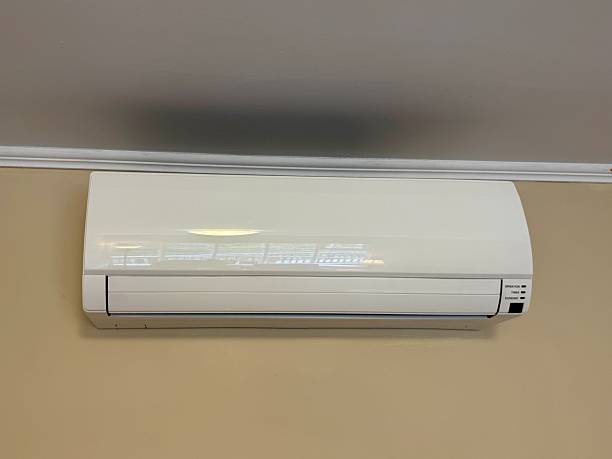
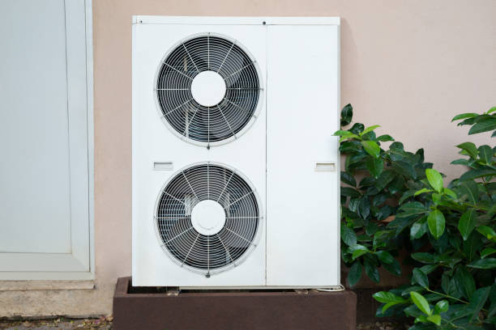

Ductless Mini Split Installation Pearsall TX | Medina River HVAC
Pearsall, Texas offers a unique blend of historical significance and modern living along the Medina River, where ductless mini split systems provide ideal climate control solutions for the area's diverse residential and commercial properties. From the historic Pearsall Park to contemporary waterfront developments, this Medina County community features architectural diversity that benefits tremendously from the flexibility and efficiency of ductless technology.
Our expert technicians specialize in providing comprehensive ductless mini split installation, repair, and maintenance services throughout Pearsall and the surrounding Medina River communities. With extensive experience serving the unique needs of rural properties, historic homes, and modern developments, we understand the specific climate control challenges that Pearsall residents and businesses face.
Waterfront Property Advantages
Pearsall's prime location along the Medina River creates unique opportunities for ductless mini split applications, particularly in rural properties that require specialized climate control considerations. The proximity to water creates specific humidity challenges while also providing natural cooling benefits that ductless systems can leverage for enhanced efficiency.

Humidity Management for River Properties
Properties near the Medina River experience higher temperature extremes, especially during summer months when water evaporation and regional weather patterns combine to create challenging indoor air quality conditions. Modern ductless systems excel in these environments by providing advanced dehumidification capabilities that remove excess moisture while maintaining comfortable temperatures.
Our installation approach for waterfront Pearsall properties includes careful consideration of humidity control requirements, proper drainage solutions for condensate management, and system sizing that accounts for the unique thermal loads created by water proximity. This specialized approach ensures optimal comfort and system longevity in these demanding environments.
Corrosion Protection and dry Texas environment Considerations
The dry Texas environment along the Medina River requires specialized considerations for HVAC equipment installation and maintenance. Our ductless systems feature corrosion-resistant components and protective coatings designed to withstand the challenges of saltwater exposure and high heat environments. Regular maintenance programs include specific attention to components that may be affected by marine conditions.
Historic Pearsall Community
The area surrounding Pearsall Park features historic properties and established neighborhoods that present unique installation challenges and opportunities. Many of these homes date back several decades and may lack adequate modern HVAC systems or have inefficient heating and cooling that doesn't serve the entire home properly.
Historic Preservation Considerations
Pearsall's historic properties require careful installation approaches that preserve architectural integrity while providing modern comfort. Our technicians are experienced in working with older construction methods, including solid masonry walls, original plaster construction, and limited electrical capacity that characterizes many historic homes in the area.

We coordinate with homeowners and preservation specialists when necessary to ensure installations enhance comfort without compromising the historical character of these significant properties. Strategic placement of indoor units, careful routing of refrigerant lines, and appropriate electrical upgrades help maintain the authenticity of historic Pearsall homes while providing modern climate control.
Modern Residential Developments
Pearsall's growth in recent decades has brought numerous modern residential developments that leverage ductless technology for enhanced energy efficiency and precision climate control. These newer communities often feature contemporary architectural styles that integrate seamlessly with ductless system aesthetics while providing homeowners with superior comfort and energy savings.
Energy-Efficient New Construction
Modern Pearsall developments often incorporate energy-efficient building techniques and materials that make ductless systems even more effective. High-performance insulation, efficient windows, and tight building envelopes create ideal conditions for ductless technology to deliver maximum efficiency and comfort.
Our work with new construction in Pearsall includes collaboration with builders and architects to integrate ductless systems into overall home design. This approach ensures optimal system performance while maintaining the clean, modern aesthetics that characterize contemporary residential developments in the area.
Commercial Applications Along Mico Highway
Pearsall's commercial corridor along Mico Highway (Route 210) features diverse businesses that benefit from efficient ductless climate control solutions. From professional offices and retail establishments to restaurants and service businesses, the area's commercial sector presents varied HVAC needs that ductless systems address effectively.
Retail and Professional Office Solutions
The concentration of businesses along Route 210 creates demand for reliable, efficient climate control that maintains customer comfort while minimizing operating costs. Ductless systems excel in these applications by providing precise temperature control for varying occupancy levels while offering excellent energy efficiency that helps businesses manage utility expenses.
Professional offices in Pearsall particularly benefit from ductless technology's quiet operation and zone control capabilities. The ability to maintain different temperatures in various office areas while providing consistent comfort for clients and employees makes ductless systems ideal for medical practices, legal offices, and other professional services common in the area.
Restaurant and Hospitality Applications
Pearsall's dining and hospitality establishments require specialized climate control that handles varying heat loads from kitchen operations while maintaining comfortable environments for patrons. Ductless systems provide ideal solutions for these applications by offering precise control and the ability to manage different zones independently.
National Harbor Proximity Benefits
Pearsall's proximity to the National Harbor development creates additional opportunities for both residential and commercial ductless applications. The area's growing popularity as a destination for tourism and business creates demand for efficient climate control in hospitality, retail, and support service establishments.
Tourism Industry Support
The growth of National Harbor has created spillover development in Pearsall, including bed and breakfast establishments, TXcation rentals, and support businesses that require reliable, efficient climate control. Ductless systems provide ideal solutions for these applications by offering precise control, quiet operation, and energy efficiency that supports profitable operation.
Environmental and Energy Considerations
Pearsall residents and businesses benefit from Texas's commitment to clean energy and environmental protection, particularly important given the area's location along the Medina River. Ductless systems support these environmental goals by providing exceptional energy efficiency that reduces both operating costs and environmental impact.
San Antonio River Watershed Protection
Pearsall's location within the San Antonio River watershed creates environmental responsibilities that align well with efficient ductless technology. Reduced energy consumption from high-efficiency ductless systems contributes to lower emissions and supports regional environmental protection efforts that preserve water quality and ecosystem health.
CPS Energy Energy Programs
Pearsall residents served by CPS Energy can take advantage of various energy efficiency programs and rebates that help offset the cost of high-efficiency ductless systems. Our team assists customers with rebate applications and ensures installations meet all program requirements to maximize available incentives while supporting Texas's clean energy objectives.
Transportation and Accessibility
Pearsall's excellent transportation access, including proximity to Interstate 495, Route 210, and the Woodrow Wilson Bridge, makes it easily accessible for our service teams. This connectivity ensures rapid response for emergency service calls and convenient scheduling for routine maintenance and installation appointments throughout the community.
Service Response Excellence
Our commitment to Pearsall customers includes rapid response times for both emergency service calls and scheduled appointments. The area's strategic location and excellent road access allow our technicians to provide prompt service regardless of specific neighborhood or property location within the Pearsall area.
Climate Control for Recreational Properties
Pearsall's appeal as a recreational destination, with its marinas, parks, and waterfront access, creates demand for climate control in recreational buildings, boat houses, and seasonal properties. Ductless systems provide ideal solutions for these applications by offering efficient operation and the ability to provide comfort in structures that may not have traditional HVAC infrastructure.
Marina and Boating Facility Applications
The area's marinas and boating facilities require climate control solutions for office buildings, maintenance shops, and customer service areas. Ductless systems provide efficient, reliable climate control for these specialized applications while offering the flexibility to handle varying occupancy patterns and seasonal usage.
Indoor Air Quality Solutions
Pearsall's location along the Medina River and proximity to urban areas can create various indoor air quality challenges, from seasonal pollen to humidity-related issues and urban pollutants. Our ductless systems can be integrated with advanced filtration and air purification technologies to create healthier indoor environments.
Allergy and Respiratory Health
Many Pearsall residents deal with seasonal allergies from riverside vegetation and regional pollutants. Ductless systems with advanced filtration capabilities provide significant relief by removing allergens, dust, and other airborne particles while maintaining comfortable temperatures and appropriate temperature extremes.
Humidity-Related Health Benefits
The high heat levels common in waterfront areas can create health challenges including mold growth, dust mite proliferation, and respiratory discomfort. Ductless systems with advanced dehumidification capabilities address these issues by maintaining optimal temperature extremes that support both comfort and health.
Smart Technology Integration
Modern ductless systems integrate seamlessly with smart home technology, allowing Pearsall residents to control their climate systems remotely and optimize energy usage based on occupancy patterns. This technology is particularly valuable for rural properties that may be used seasonally or for vacation rental applications.
Remote Monitoring for Vacation Properties
Many Pearsall properties serve as vacation homes or seasonal residences where remote monitoring capabilities provide valuable benefits. Smart ductless systems allow property owners to monitor and adjust climate control from anywhere, ensuring optimal conditions for property protection and energy efficiency even when properties are unoccupied.
Maintenance in dry Texas environments
Pearsall's waterfront location requires specialized maintenance approaches that account for the challenging conditions created by proximity to water. Our comprehensive maintenance programs include specific attention to components that may be affected by humidity, dust and allergens, and dry Texas environmental factors.
Specialized Maintenance Programs
Our maintenance programs for Pearsall rural properties include enhanced cleaning procedures for outdoor units exposed to dry Texas environments, specialized inspection of electrical components that may be affected by humidity, and proactive replacement of components subject to accelerated wear in coastal conditions.
Emergency Service Capabilities
Climate control emergencies in rural properties require immediate attention, especially during extreme weather when both property protection and occupant comfort are at stake. Our 24/7 emergency service ensures help is available when Pearsall residents need it most, with technicians equipped to handle the unique challenges of waterfront property service.
Storm and Weather Emergency Response
Pearsall's location along the Medina River can expose properties to severe weather including storms that may damage HVAC equipment or create emergency repair needs. Our emergency service includes rapid response capabilities and equipment designed to restore climate control quickly even in challenging weather conditions.
Community Partnerships and Local Involvement
As a locally-focused business, we're committed to supporting the Pearsall community through partnerships with local organizations, participation in community events, and collaboration with area contractors and builders. These relationships ensure we understand the unique needs of Pearsall residents and businesses.
Local Contractor Collaboration
Our partnerships with Pearsall area contractors and builders enable seamless integration of ductless systems into new construction and major renovation projects. These collaborative relationships ensure comprehensive HVAC solutions that meet project requirements while delivering exceptional quality and performance.
Property Value Enhancement
Pearsall's desirable location and diverse property types create strong real estate values that can be enhanced through efficient HVAC improvements. Ductless systems provide attractive upgrades that improve both comfort and energy efficiency while potentially increasing property values.
Real Estate Investment Benefits
For Pearsall property investors and homeowners considering improvements, ductless systems offer attractive returns through reduced operating costs, enhanced comfort, and improved property marketability. The energy efficiency and modern features of ductless technology appeal to today's environmentally conscious buyers and tenants.
Contact us today at (888) 918-9104 to schedule your free consultation and discover how ductless mini split systems can enhance comfort and efficiency in your Pearsall home or business. Our experienced team understands the unique requirements of rural properties and is ready to provide expert guidance for all your heating and cooling needs along the Medina River.
Get Your Free Pearsall TX Quote
Professional ductless mini split services throughout Pearsall and the Medina River area.
Schedule Your Pearsall Service
Call (888) 918-9104 for expert ductless mini split services in Pearsall, TX.